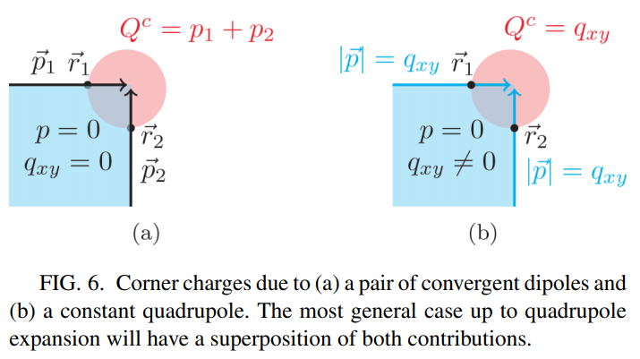
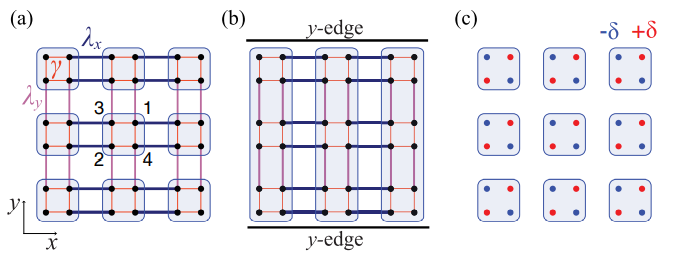
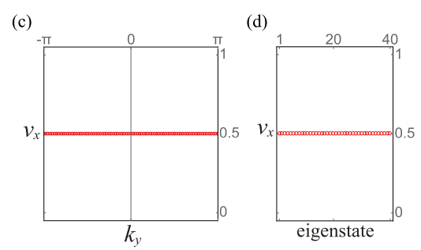

Edge dipole moments in 2D crystals
A confusion

对于一电中性，绝缘，且在bulk和boundary没有自由电荷的系统，当系统有boundary observables，以二维系统而言，它有两种可能的来源：(a) surface effect: 两边界极化在角处的汇聚；(b) bulk effect: 同时具有边界极化和角电荷 $Q^c$ 的聚集。第一种情况如 (a) 图所示，这类表面偶极矩并非来自于 bulk moment ($q_{xy}=0$)，而是表面自身的效应。第二种情况如 (b) 图所示，此时电荷和极化的聚集现象由 bulk quadrupole moment 唯一产生。
Position-dependent polarization
考虑一个在 $x-y$ 方向有 $N_x\times N_y$ 个原胞的 2D insulator，当我们想得出 $x$ 方向的极化 $p_x$ 在实空间 $y$ 方向的分布 $p_x(R_y)$ 时，我们需要考虑一个 $x$ 方向PBC，$y$ 方向OBC的准一维超胞，也就是将开边界方向的位置指标 $R_y \in 1 … N_y$ 当作超胞的内部自由度，如下图所示：

此时超胞费米子产生湮灭算符变为：
二次量子化哈密顿量 (second quantized Hamiltonian)：
其中 $\alpha,\beta \in 1 … N_{\text{orb}}$ (这里 $N_{\text{orb}}=4$)，$R_y,R_y’\in 1…N_y$. 由于 $k_x$ 是好量子数，我们可以将Bloch Hamiltonian作对角化：
其中 $n \in 1 … N_{\text{orb}}\times N_y$. 这里发生的事情是：(1)式中的产生湮灭算符等效于 Dirac ket&bra，也就是田光善老师说的“裸态”，是一些个抽象的basis，只有选定了特定的表象，才能和有系数的向量mapping起来，而(2)式正是选定了 Bloch 表象，才能将 (1) 中的矩阵元 $[h_{k_x}]^{R_y,\alpha,R_y’,\beta}$ 具体的写出来 (抽象的产生湮灭算符向量化为一些系数，如 $[u_{k_x}^{n}]^{R_y,\alpha}$)。将 (2) 式代入 (1)式并对重复指标求和， second quantized Hamiltonian 变为：
其中准粒子算符为
以上所有系数 表示: 在波矢 处，第 $n$ 个能级 $\epsilon_{n,k_x}$ 对应的 Bloch 波函数的第 $f(R_y,\alpha)$ 个分量 (在我们的例子中 $f=4*(R_y-1)+\alpha$ )。
Wilson line elements $[G_{k_x}]^{mn}$:
相应的占据态为 $m,n \in 1…N_{\text{occ}}\times N_y$, $N_{\text{occ}}$ 为单胞的占据态个数，这里是2。有了以上的理论基础，我们就可以沿着 $x$ 方向计算 $y$-OBC 条带的Wilson loop，相应的Wilson matrix $[\mathcal{W}_{k_x+2\pi \leftarrow k_x}]^{mn}$ 是 $N_{\text{occ}}\times N_y$ 维的方阵，并且只有这一个 Wilson matrix (因为是1D 系统)，所以数值对角化后得到的 Wilson-loop eigenvalues 有 $N_{\text{occ}}\times N_y$ 个。
相应的 Wilson-loop eigenstates 为 (hybrid) Wannier functions ：
for $ j \in 1… N_{occ} \times N_y, \; R_x \in 1 … N_x $, and where $[\nu_{k_x}^{j}]^{n}$ is the $n$th component of the $j$th Wilson-loop eigenstate $\vert \nu_{k_x}^{j} \rangle $, … 这里的 hybrid 表示 localized along $y$ but are Bloch type along $x$, 即是一种 partially localized 的态。
$[\nu_{k_x}^{j}]^{n}$ 是第 $j$ 个 Wilson-loop eigenstate： $\vert \nu_{k_x}^{j} \rangle $ 的系数，数值上来讲就是你对角化矩阵 $[\mathcal{W_{k_{x}+2\pi \leftarrow k_x}}]^{mn}$ ($m,n$ 跑遍占据态) 后得到的第 $j$ 个本征向量的分量。注意这里的下角标 $k_x$ 标记的是 Wilson-loop 的起点。
有分量了还不够“物理”，还要有基 (basis)，而 Wilson-loop 对应的是 Wannier 基，而我们手头上有 Bloch 基 $\gamma_{n,k_x}^{\dagger} \vert 0 \rangle $，作傅里叶变换即可：
有了 (5) 式，我们就可以作它的模 $\langle \Psi_{R_x}^{j} \vert \Psi_{R_x}^{j} \rangle$ :
(6)式中也要对 $n$ 求和，求和遍历所有的占据态。注意到几率密度 $\rho$ 与 $R_x$ 无关，这也符合 $x$ 方向的平移不变性，因此 $\rho^{j,R_x}$ 简单记作 $\rho^{j}$. 通过考察 $\rho^{j}$ 的分布，我们可以确认第 $j$ 个 Wannier eigenstate 在 $y$ 方向的局域行为。这一过程与求解 tight-binding Hamiltonian 得到 Bloch 波函数，进而通过波函数分量的模平方得到电子的实空间分布的 usual way 有什么区别吗？个人觉得是没有本质区别的，因为是在两个表象下解同一个方程，或者说，(5)式本质上就是 Bloch 波函数的傅里叶变换，它的模方与 Bloch 的模方应该给出一致的结论1。tight-binding 给出的是沿 $ k_x $ 方向的投影能带，能带的物理意义是本征能级，带隙中间态的波函数模平方反映出边缘态电子的几率分布；Wilson-loop 这一套将 $k_x$ 方向加和，消除了 $k_x$ 作为能级的标记，得出的是散点谱(Wilson-loop eigenstates)，散点谱的给出的不是本征能级，而是Wilson-loop eigenvalues，亦是 projected position operator 的 eigenvalues，所以也叫做 Wannier center 2.
利用该几率密度可以给出 $x$ 方向极化在 $y$ 方向的分布：
$p_x(R_y)$ 叫做 tangential polarization, 通过加和一半的tangential polarization, 我们可以得到边界极化 (edge polarization)：
角电荷：
Example
对于文中的 Hamiltonian (5.10), 取胞内跃迁 $\gamma$ 很小, 并保持 Inversion symmetry 和 $x$ 与 $y$ 方向的镜面对称性。两个方向的超胞投影能带为：

可以看到 $k_y$ 方向周期性时，边缘态与体态是混合的。
取一个很小的质量项 $\delta=10^{-4}$ 轻微打破了镜面，目的是使非平庸极化不量子化 (不准确等于 0.5)，从而打破 Wannier degeneracy。胞外跃迁各向异性: $\lambda_x>\lambda_y$。当取 $x$ 方向开边界 20 个元胞时，沿 $k_y$ 方向作占据态的 large Wilson-loop 并对角化，得到 20*4/2 个 Wannier eigenvalues (Wilson-loop eigenvalues) $\nu_y$, 即 Wannier 谱：

需要注意的是，在上图中的gap存在极化为 $\pm0.4999$ (unambiguous sign for edge polarizations)，这是由于很小的质量项 $\delta$ 导致。如果该项取大一些，比如 $\delta=0.2$，则gap中的 Wannier value 会偏离0.5多一些，相应的边界极化的量子化程度也会低一些，这些都是由y方向的镜面对称导致的，具体见 Benalcazar 的PRB3。另外，如果质量项为 0，则两个非平庸解都是 0.5，相应的 Wannier eigenstate 简并。
利用 (6) 式，我们可以 check 第 $j$ 个 Wannier eigenvalues 的本征态沿开边界方向的几率密度 $\rho_{R_x}$：

上图由左至右展示的是 $j=39,38,37,36$ 的 $\rho_{R_x}$. 可以看到 $\nu_y=0$ (topological trivial) 的Wannier eigenstate 主要分布在体里，这些态叫做 gapped bulk Wannier states. 对于 $\nu_y=0.5\;\text{mod}\;1$ (topological non-trivial) 的两个 Wannier eigenvalue 的 Wannier eigenstate ($j=1,40$) 是 edge localized 的：

可以看到高度局域在 $R_x=1$ ($j=40$)和 $R_x=20$ ($j=1$)处。根据 (7) -(8)式，我们发现正是这一对 Wannier values 的 Wannier states 导致了 $\pm \frac{1}{2}$ 的 edge polarizations：

如果保持严格的镜面对称性 ($\delta=0$) ，就会又一对严格出现在0.5的 Wannier value $\nu_y$, 也就是没有 unambiguous sign 的 in-gap Wannier values：

相应的 Wannier states ：

这样的一对态无法分辨 $\pm \frac{1}{2}$ 的 edge polarization ：

对于 $y$ 方向开边界20个元胞， $x$ 方向周期性的准一维超胞，取 $\delta=10^{-4}$ 同样有 Wannier eigenvalues $\nu_x$:

这里的非0质量项 $\delta$ 轻微打破镜面对称，使 Wannier eigenvalues 分为了$\pm 0.5$两支，从而有 unambiguous sign。这两支也使得 $p_x(R_y)=0$ 。挑出几个态看看 Wannier state 的分布：

可以看到正负两支 Wannier band 的 Wannier state 基本上是对称分布的，从而导致边界极化几乎为0：

若 $\delta=0$，则得到 degenerate eigenvalues $\nu_x^{j}=\frac{1}{2}$ (这里的 $\frac{1}{2}$ 是由镜面对称性 $M_x$ 保证的)，如 Benalcazar 文章中所示：

1. Since the Fourier transform is really just a special case of a unitary transformation, we can view the Bloch and Wannier functions as providing two different basis sets describing the same manifold of states associated with the electron band in question. —— David. Vanderbilt Page, 113 Section 3.5 ↩
2. … At the time, Zak was mainly concerned with symmetry properties and the relation of the Berry phase to the “band center”, which we now identify with a Wannier center… —— David. Vanderbilt Page, 107 Section 3.4 ↩
3. https://doi.org/10.1103/PhysRevB.96.245115 ↩